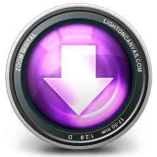
FirstPass User Manual
Objective
Downloading thousands of photographs from multiple memory cards can be a considerable challenge, particularly as each card must be downloaded individually, even when using several card readers. Furthermore, the initial editing process — rating, deleting, and detailed viewing — demands substantial time and effort. This software is specifically designed to assist photographers in reducing this workload by significantly expediting both the downloading process and the first pass edit, all within a single application.
This version of FirstPass has been re-imagined using SwiftUI and Swift.
Requirements: The current release is version 1.8, available on the Mac App Store and requiring macOS 14.6 or later.
New in 1.8
Bursts, decided. Frames shot close together fold into a single stack, every frame is ranked, and a keeper is suggested. Compare a stack two frames at a time until one is left. See Bursts, below.
Focus mode. Press ⌘L, or Space on a photograph, and everything but the picture goes. Rating, flag and arrow keys keep working.
Cards you have seen before. Turn on download history and FirstPass remembers what it copied off each card; put the card back in and only the new photographs are offered.
Thumbnails that stay. Thumbnails are kept on disk, so a folder you have browsed shows them straight away next time, even after quitting.
Your work travels with the file. Exported originals can carry an XMP sidecar with their rating and colour label, and transfer reports name each copy’s file on the card and the folder it went to.
Keep Zoom Between Images holds the magnification and position in the viewer as you move on, to check the same detail in every frame.
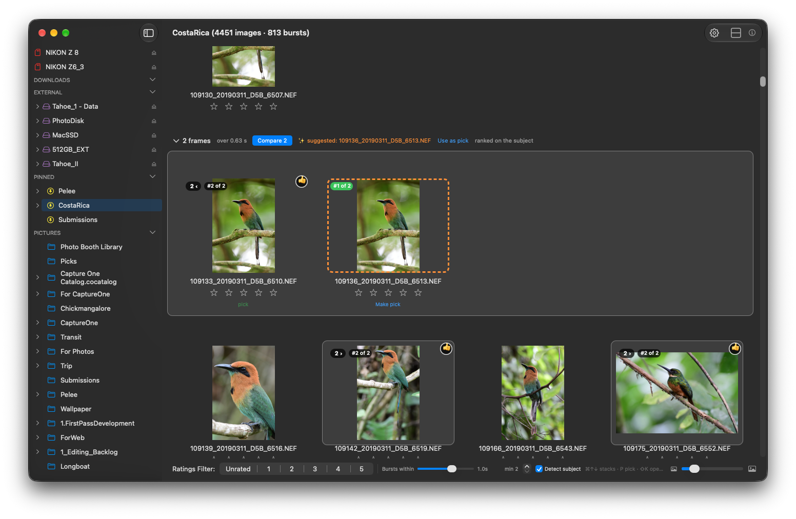
Unique features of FirstPass
Every copy is verified before the card is released — by size, or by a full content checksum.
Writes a transfer report for the job: a CSV manifest, a PDF summary, or an ASC MHL sidecar.
Two download paths: Fast reads a mounted card directly, and Automatic drives any camera over PTP.
Files are filed by their own capture date, camera make and model — read from each file, not from the clock.
The first Mac App Store application to enable image download from multiple sources to multiple destinations.
Provides a fast and clean interface to do a “first pass” editing of images.
Frees up the user’s time by handling multiple downloads at the same time without requiring the user to swap the cards in and out of a card reader or starting the download manually for each card.
Can be configured to automatically start downloading when a device (or multiple devices) are plugged in.
Quick start guide
FirstPass has a single window type. You can open several windows and browse a different folder or download a different card in each. One window can also copy from several cards at the same time — each with its own progress and its own Cancel — and you can carry on browsing while they run.
Point it at your photographs. Pictures is the default. If your work lives somewhere else — another folder, or an external disk — set that folder under Settings ▸ General ▸ Browse folder.
Attach a card or camera. It appears at the top of the sidebar. Press Browse to look through it, or start a download straight away. In Fast mode macOS asks you to grant access the first time it sees each card, and remembers your answer afterwards.
Check the Download and Verification settings before your first import. They decide where files land, how folders are named, and how thoroughly each copy is checked.
Download the whole card or just your selection. The copy keeps running while you carry on browsing, and its progress stays in the sidebar under Downloads.
Make your first pass. Rate 0–5, flag with ⌘1–⌘9, filter to what you kept, and compare the near-identical frames side by side.
Pin the folders you keep coming back to, so they are one click away next time — including folders on an external disk.
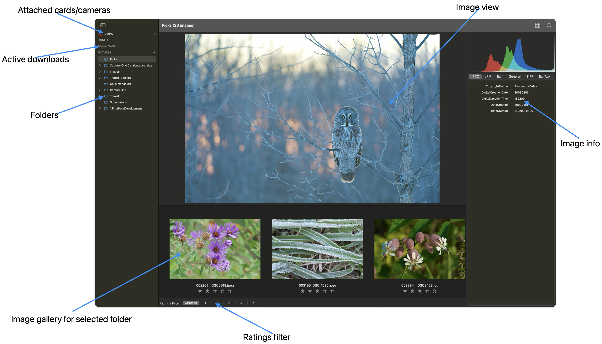
Settings Window
The Settings window (⌘,, or the gear in the toolbar) configures how images are downloaded, how each copy is verified, how bursts are grouped and how the app looks. It is worth setting up the Download and Verification tabs before your first import — they decide where your files land and how thoroughly each copy is checked. Every tab is described in full under Settings below.
Parts of Main Window
FirstPass has a single kind of window. Open as many as you like with ⌘N and browse a different folder or card in each; every window keeps its own selection, and a rating or flag set in one appears at once in every other window showing the same photographs. The window remembers its size and position between launches.
Sidebar
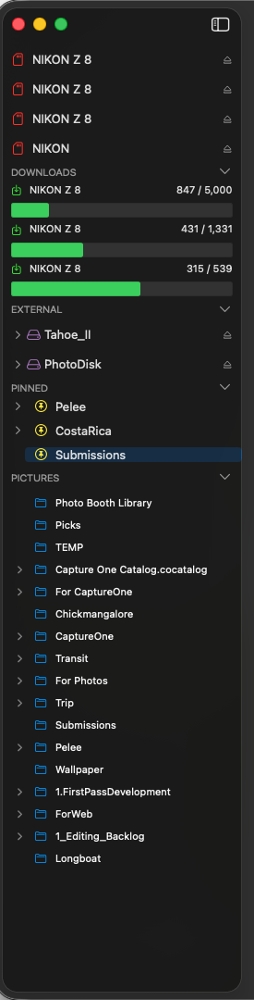
The sidebar is how you reach everything: the cards and cameras attached to your Mac, transfers in progress, your disks, the folders you have pinned, and the folder tree you browse from. It has five sections, always in this order:
Cards and cameras — anything readable that is attached right now. Each row has a Browse button and its own Eject button. The first time FirstPass opens a card in Fast mode, macOS asks you to grant access to it; a card or drive that could not be ejected shows a warning badge on its row.
Downloads — transfers running or finished, each counting its copies as they are checked against the card (for example 63/121 checked). A copy keeps going while you browse elsewhere, and each card has its own progress and its own Cancel.
External — every mounted external disk, each expandable to its folders and each with an Eject button. Browsing a drive is the same as browsing anywhere else: rate, flag, compare and export straight from it. FirstPass refuses to eject a disk while a copy is still writing to it.
Pinned — the folders you use most often, one click away. Pin any folder from its right-click menu, drag them into whatever order suits you, and unpin from the same menu. A pin can live on an external disk, and reconnecting the disk brings it back.
Your browse root — the folder tree you work in, named after the folder itself. Pictures by default.
A pinned folder and the same folder in the tree are separate rows. Expanding or selecting one leaves the other alone, so a pin behaves like a shortcut rather than a second view of the same thing.
Changing where you browse. Pictures is the default root and you are not tied to it. If your work lives on an external disk, or in a folder elsewhere on your Mac, set it as the root under Settings ▸ General ▸ Browse folder: the tree is rooted there instead and the section is renamed to match. macOS remembers the permission between launches. If that folder is ever unreachable — renamed, or on a disk that is unplugged — FirstPass falls back to Pictures and says why in the sidebar, rather than leaving you wondering where your library went.
Managing folders. Right-click a folder in the tree, in Pinned or on an external disk for:
New Folder… — creates a folder inside it. The browse root’s section title offers the same, at the top of the tree.
Rename Folder…
Pin Folder or Unpin Folder
Delete Folder… — moves the folder and everything inside it to the Trash, after asking.
Grant Access… — shown on a folder FirstPass is not yet allowed to read.
Each section can be collapsed to get it out of the way, and the whole sidebar can be hidden with View ▸ Hide Sidebar or the sidebar button in the toolbar.
Image Gallery
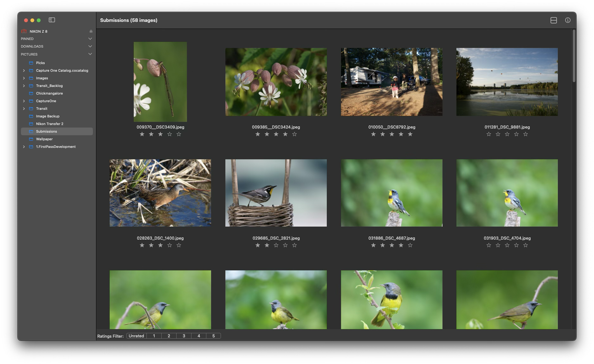
The gallery shows the photographs in the selected folder. The window title gives the folder’s name and how many images it holds — and, with bursts grouped, how many bursts and how many frames have no capture time. File ▸ Open Folder… (⌘O) opens any folder, and you can also drop a folder or photographs onto the window to open them.
Thumbnail size — the slider in the bar at the bottom of the gallery. The size is remembered.
Moving around — the arrow keys move the selection; with nothing selected, the first arrow selects the first photograph.
Opening a photograph — double-click it to open the viewer, or press Space for focus mode.
Large folders — above the number set in Settings ▸ General, a notice says the folder may be slow to open and scroll. Close it with its × button.
Dragging out — drag photographs from the gallery to the Finder or another app to copy them there.
Context Menu
Right-click a photograph, or a selection of them, for:
Set Rating — Unrated or 1 to 5 stars.
Set Color — a row of swatches: No Color and the nine flag colours. The colour the selection already has is ringed.
Show Image Information — opens or closes the info pane.
Show in Finder
Delete — moves the photographs to the Trash, asking first above the number set in Settings ▸ General.
Rename Image / Rename Images — opens the rename window described under File Renaming.
Export Image / Export Images — opens the export sheet described under Exporting.
Open with External Editor — opens the original in the application set in Settings ▸ General.
Compare Images — with two or more photographs selected.
Make Pick — on a frame in a burst stack that is not already its pick.
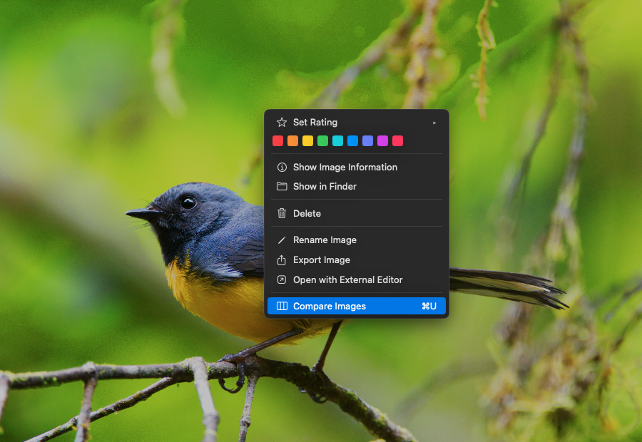
Note: On a card or a camera the rating, colour and rename items are not offered: a card is browsed read-only.
Sorting
The Browser menu sorts the gallery by Name, Rating or Exif Creation Date, ascending or descending. Name is the default, and it understands a camera’s file numbers rolling over. Turning on Group bursts switches the order to capture date, because a burst is a run of frames in the order they were shot.
Image Information
The info pane shows a histogram and the details that matter for a decision: camera, lens, when it was taken, aperture, shutter speed, ISO, focal length, exposure, metering, white balance, program, flash and dimensions. Show raw EXIF at its foot lists everything else the file carries. Open it with View ▸ Show Info Pane (⌘I), the ⓘ button in the toolbar, or Show Image Information in the context menu; the window widens to make room if it needs to.
Ratings Filter
The Ratings Filter at the bottom left of the gallery has six buttons: Unrated, and 1 to 5 stars. Turn one or more on and the gallery shows only photographs with those ratings; with none on, it shows everything.
Ratings
Press 1 to 5 to give the selected photographs that many stars, and 0 to clear the rating. The same is in Photo ▸ Set Rating and the context menu. Ratings are kept by FirstPass rather than written into your photographs, so originals are never rewritten; they travel with a photograph you move or copy within FirstPass, and survive a trip to the Trash and back. To take them to another application, export with an XMP sidecar or with the rating embedded.
Colour Flags
In addition to 0–5 star ratings, each image can be marked with one of nine colour flags: Red, Orange, Yellow, Green, Teal, Blue, Indigo, Violet and Magenta, on ⌘1 to ⌘9; ⌘0 clears it. Set a flag from Photo ▸ Set Color, the context menu or the keyboard. The nine colours can be changed in the Colors tab of Settings, and the flag is shown on the image in the gallery.
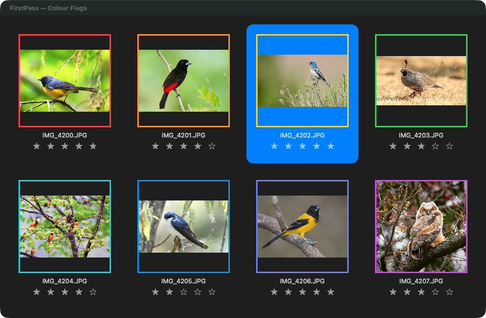
Selecting Multiple Images
Several images can be selected at once for rating, flagging, renaming, exporting or comparison. Use ⌘-click to add or remove individual images, Shift-click to select a range, Shift with the arrow keys to extend the selection from the keyboard, and ⌘A to select everything. Dragging any photograph in a selection drags the whole selection.
Deleting
Press ⌫ (Delete), or choose Delete from the context menu, to move the selected photographs to the Trash. Nothing is deleted outright. Above the number set under Settings ▸ General ▸ Ask before moving or deleting, FirstPass asks first, and Cancel is the safe answer.
Image Viewer
Double-click a photograph, or press ⌘E (View ▸ Show Image Viewer), to open the viewer: the photograph large, with a film strip of the folder beside it. ← and → move through the folder, and the rating, flag, Delete, Space and P keys work as they do in the gallery.
Zoom — double-click the image to switch between fitting the window and 100% (actual pixels), centred on the point you clicked. Drag to move around a zoomed image.
Keep Zoom Between Images — a toggle in the toolbar while the viewer is open. On, the magnification and position stay put as you move to the next photograph, so you can check the same detail in every frame.
Always Decode RAW — in Settings ▸ General. The viewer first shows the camera’s embedded preview; double-clicking always decodes the RAW file itself.
Badges — a rating or flag you set shows briefly on the image. Settings ▸ General ▸ Viewer chooses how long, or turns them off.
Press ⌘E again, or the viewer button in the toolbar, to return to the gallery.
Compare Similar Images
New in version 1.7.1.
When several frames are near-identical — for example a burst, or several attempts at the same shot — it helps to view them together to keep only the best. Select two or more images and choose View ▸ Compare Images (⌘U), or Compare Images from the context menu. Up to ten can be compared at once, and up to sixteen if you raise Compare up to in Settings ▸ General. The selected images are tiled side-by-side and zoom and pan in unison, so you are always looking at the same part of every frame at the same time — ideal for judging critical focus and sharpness.
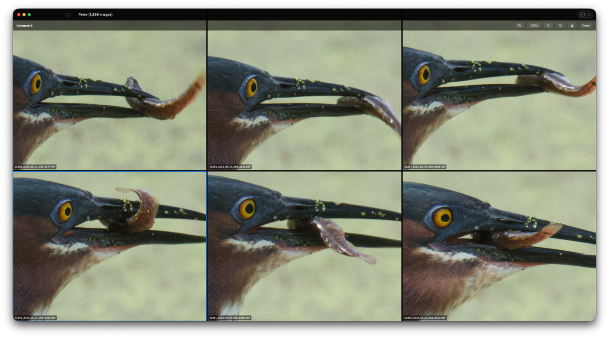
Choosing a frame — click it, or use the arrow keys: ← and ↑ for the previous frame, → and ↓ for the next.
Zoom — Fit and 100% buttons, the zoom buttons, = and − on the keyboard, pinching on a trackpad (up to 4×), or double-clicking a frame at the point you want. Drag or scroll to pan.
Lock — the lock button keeps the frames moving together. Unlock it to line one frame up by hand, then lock again.
Mixed resolution — shown in the title bar when the frames differ in size, so you know 100% is not the same scale for all of them.
Rate and flag — 0 to 5 rate the chosen frame, ⌘0 to ⌘9 flag it.
Remove a frame — ⌫ takes the chosen frame out of the comparison without deleting it. Compare closes when fewer than two remain.
Press Escape or Done to return to the gallery.
Bursts
New in version 1.8.
Turn on Settings ▸ General ▸ Group bursts and frames shot close together fold into a single stack in the gallery, with a badge showing how many frames it holds. A folder of a thousand action frames then reads as a few dozen decisions. Click the badge, or press ⇧K or Space, to open a stack.
An open stack has a header: how many frames it holds and over how long they were shot, its pick, a Compare button, the suggested keeper with Use as pick to accept it, and how the frames were ranked.
Ranking. Every frame in a stack is ranked on sharpness, subject detail, motion and exposure — on the subject itself when one is found — and each shows its place, such as #1 of 6. The suggested keeper has a dashed outline. Click a frame’s place to see why: the scores behind the order, weighted, and compared within this burst.
Set aside. A soft frame or a downsized copy is marked gated, and says why, rather than competing with the real candidates.
The pick. A 👍 marks the stack’s pick, and a closed stack shows its pick in front. Press P, choose Stacks ▸ Make Pick, or click Make pick on a frame to change it.
Moving between stacks. ⌘↓ and ⌘↑ select the next and previous stack’s pick; ⇧K opens or closes the selected stack; ⌥’ opens every stack and ⌥; closes them all. The same commands are in the Stacks menu, and a reminder of the keys sits in the bar at the bottom of the gallery.
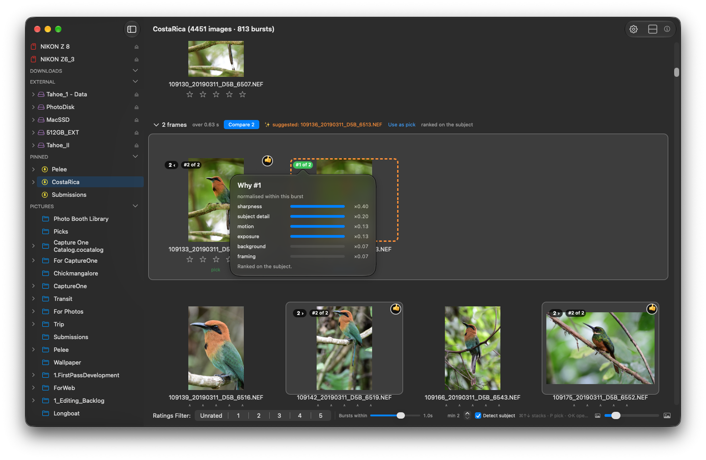
Fine-tuning. While bursts are grouped, the bar at the bottom of the gallery has a Bursts within slider for how close together frames must be, a min stepper for the smallest burst, and Detect subject to rank on the subject rather than the whole frame. Their defaults are in Settings ▸ General.
Comparing a burst
The Compare button in a stack’s header shows its frames two at a time: the Champion, starting from the pick or the suggested keeper, and a Challenger. The better one stays, the next challenger steps up, until every frame has had its turn; the footer counts how many have been compared.
← / →
Choose the Champion or the Challenger pane
↑ / ↓
Previous or next frame as challenger
Return
Promote the challenger to champion
⌘Return
Use the champion as the pick, and close
P
Make the chosen pane’s frame the pick
Esc
Close
Double-click a pane to switch between Fit and 100%, and drag to pan.
Focus Mode
New in version 1.8.
Press ⌘L (View ▸ Enter Focus Mode), or Space on a photograph, and the sidebar, toolbar, browser and title bar all fall away, leaving the picture. ← and → move through the folder, 0–5 rate and ⌘1–⌘9 flag, and a badge on the image confirms each one. Press ⌘L or Escape to come back.
Browsing Sub-folders
Browser ▸ Include Sub-folders shows a folder together with all of the images inside its sub-folders in a single gallery. It is on by default; turn it off to see only the images a folder directly contains.
Slideshow
View ▸ Play Slideshow (⌥⌘P) shows your selection, if two or more photographs are selected, or otherwise the whole folder from the selected photograph on. It opens paused: press Space or the play button to start it. ← and → step back and forward, as does clicking the left or right half of the picture, and Escape ends it. The controls hide while you watch and come back when you move the mouse. The transition and the time on each slide are set in Settings ▸ General.
Compact Image Browser
Compact image browser, enabled in the General tab of Settings, hides the filenames and rating stars and tightens the spacing so the photos themselves use more of the window — useful for a fast visual pass. The thumbnail size is still controlled by the gallery slider.
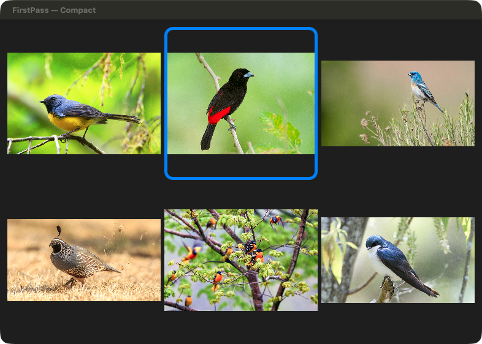
Turn on Show all images in landscape as well and portrait photos are rotated to landscape, so every cell in the grid shares the same orientation for a tidy, uniform layout.
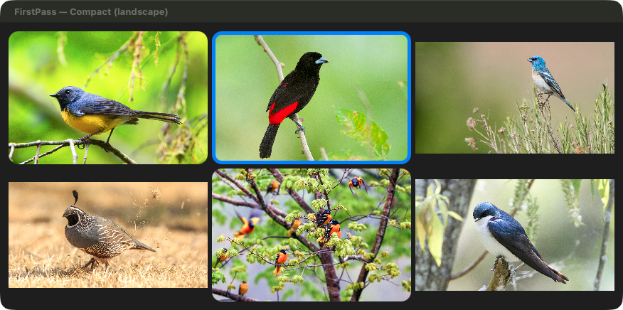
Cards and Cameras
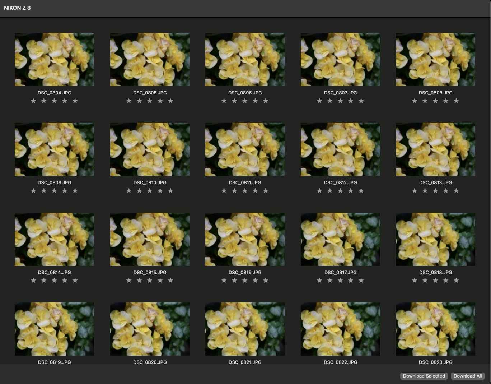
Select a card or camera in the sidebar and its photographs fill the main window. The bar at the bottom offers Download Selected, with the number selected, and Download All. With download history on and some photographs already copied, Download All becomes Download New, and its menu still holds Download all. While a copy runs the button becomes Cancel, and the same download button sits in the toolbar. When the copy finishes, a report says what was copied and verified, and why anything was not.
Note: A card or camera is browsed read-only, so it cannot be rated, flagged or renamed there. Download first, then cull.
Moving and Copying by Dragging
Drag photographs onto a folder in the sidebar to put them there. With nothing held they move within a disk and copy between disks, as in the Finder. Hold ⌥ to copy, ⌘ to move, or ⌃ to rename them by your download rules as they land; ⌃ combines with ⌥ or ⌘. A name already taken keeps both files, and ratings travel with the photographs. Moving more than the number set under Settings ▸ General asks first.
Exporting
File ▸ Export Images… (⇧⌘E), or Export in the context menu, writes copies of the selection to a folder of your choosing.
Format — Original (an exact copy of the file), JPEG, PNG, HEIC, TIFF or PDF. JPEG and HEIC have a Quality slider, 85% by default.
Write XMP sidecar — with Original, writes a .xmp beside each copy carrying its rating, colour label and camera details, read by Lightroom, Bridge and Capture One. An existing sidecar is updated rather than replaced.
Embed rating, colour label and pick in metadata — with JPEG, HEIC, TIFF and PNG, as standard XMP inside the file.
Rename exported files — the same tokens as File Renaming, with a starting sequence number and a preview.
If a file already exists — Keep both, Skip or Replace.
When it finishes, a summary offers Show in Finder.
Settings
Settings are organised into four tabs — General, Download, Verification and Colors. It is worth configuring Download and Verification before your first import, because they decide where your files land and how thoroughly each copy is checked.
General
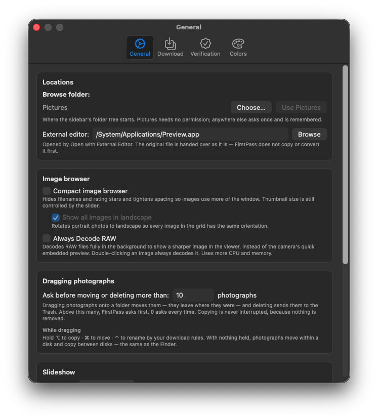
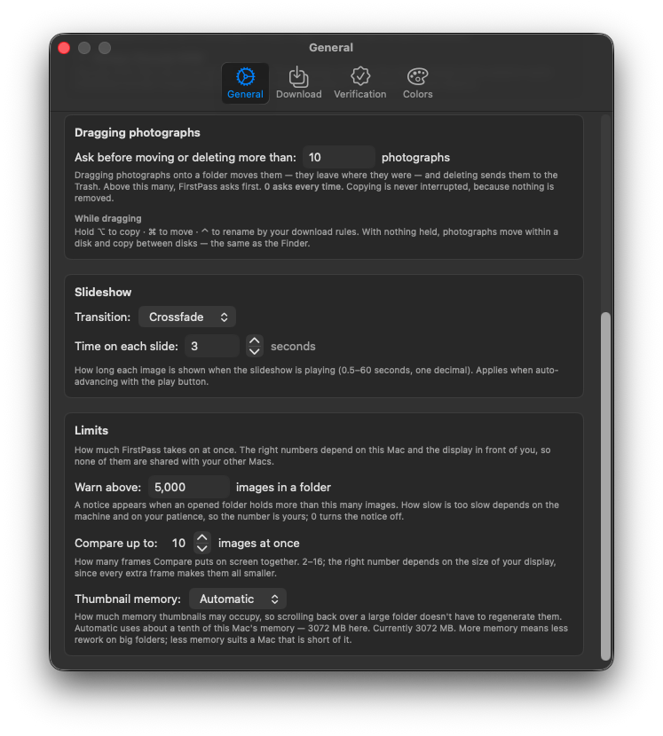
Browse folder — where the sidebar’s folder tree starts. Pictures by default and needs no permission; anywhere else is asked for once and remembered, and the section is renamed after the folder. A very large folder asks before it is used. Use Pictures puts it back.
External editor — the application opened by Open with External Editor. Use Browse to pick any app; Preview is the default.
Compact image browser — hides filenames and rating stars and tightens the spacing so images use more of the window.
Show all images in landscape — available while compact mode is on. Rotates portrait photos so every cell in the grid has the same orientation and the rows pack tightly.
Always Decode RAW — decodes RAW files fully in the background so the viewer shows a sharper image instead of the camera’s quick embedded preview. Double-clicking an image always decodes it. Uses more CPU and memory.
Group bursts — folds frames shot close together into stacks. Off by default. Under it: Group frames within (1 second by default), Smallest burst (2 frames), Show at most (12 frames when a stack is open), and Rank the frames in each burst (on).
Ask before moving or deleting — the number of photographs above which FirstPass asks first, 10 by default. One number covers both: moving takes originals out of where they were, and deleting sends them to the Trash. 0 asks every time, and Cancel is the default answer. Copying is never interrupted, because nothing is removed.
Slideshow → Transition — None, Crossfade or Slide between images.
Slideshow → Time on each slide — how long each image is shown while the slideshow plays, from 0.5 to 60 seconds.
Viewer → Rating and Colour flag — how long the badge confirming a rating or flag stays on the image: not at all, for a number of seconds, or until it is replaced. Show them outside focus mode too shows them in the viewer as well.
Warn above — the number of images above which FirstPass warns before opening a folder, 5,000 by default. 0 turns the warning off.
Compare up to — how many frames may be compared at once, from 2 to 16, ten by default. How many are worth seeing side by side depends on the size of your display, which is why it is yours to set.
Thumbnail memory — how much memory thumbnails may use. Automatic sizes it to your Mac. More memory means less re-reading from disk when you scroll back through a large shoot.
Thumbnail disk cache — how much disk space thumbnails kept between launches may use, 6 GB by default, with the space in use shown beneath. Clear Now empties it.
Prepare thumbnails ahead of time — makes thumbnails in the background and as photographs download, so a folder is ready before you open it.
Download
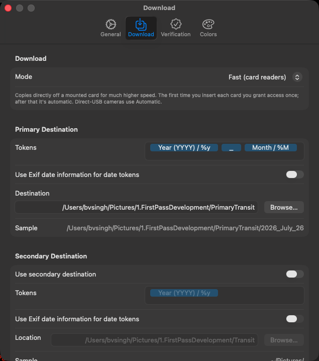
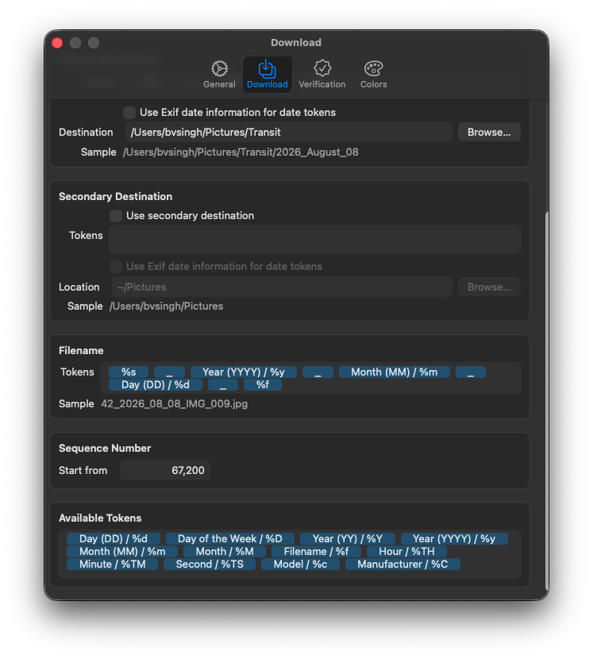
This tab decides how files come off the card and where they go. The Sample line under each destination shows the exact folder your next import would use, so you can check a token pattern before committing to it.
Mode → Automatic — drives the camera over PTP. Works with any camera, whether connected directly or through a card reader, and never asks for permission. Slower on a large card.
Mode → Fast (card readers) — copies straight off a mounted card’s filesystem. The first time you insert each card, macOS asks you to grant access to it once; after that the card is remembered. Direct-USB cameras fall back to Automatic on their own.
Primary Destination → Tokens — the folder structure built for each import. Drag tokens into the row and add your own literal text such as an underscore.
Primary Destination → Use EXIF date for date tokens — resolves date tokens from each photo’s own capture time rather than the date of the import. Turn this on: a card imported a week after the shoot then still files under the day it was shot.
Primary Destination → Destination — the folder your images are copied into. Use Browse to choose it.
Secondary Destination → Use secondary destination — writes a second copy of every image in the same pass, so a backup exists before the card leaves the reader. It has its own tokens and location, and shares the primary’s filenames.
Filename — the token pattern used to rename images as they are copied. Sequence, date, camera and original-name tokens can be combined with literal text.
Sequence Number — the running number used by the sequence token. It advances one per image, persists between sessions, and can be reset here.
Available Tokens — Day, Day of the Week, Year (YY and YYYY), Month (number and name), Hour, Minute, Second, camera Model and Manufacturer, the original Filename, Sequence #, and the / and _ separators.
Note: Destination tokens build folders; the sequence-number token belongs in the filename, not in a folder name. The sequence number, the token patterns and the EXIF and secondary-destination switches follow you between Macs through iCloud; the destination folders do not, because each Mac has its own disks.
Verification
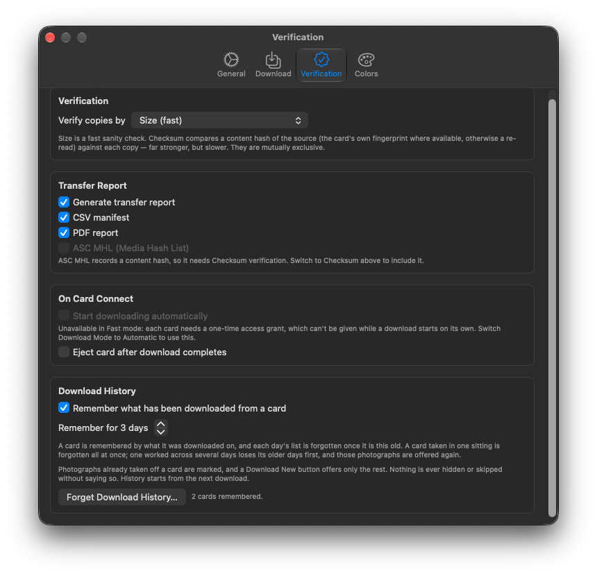
A plain file copy assumes it worked. This tab decides how thoroughly FirstPass checks each copy before releasing the card, what record it leaves behind, what happens the moment a card is connected, and whether FirstPass remembers what it has already copied.
Verify copies by → Size (fast) — a fast sanity check that the bytes written match the bytes on the card.
Verify copies by → Checksum — SHA-256 (thorough) — compares a content hash of the source against every copy written. Far stronger, and slower. The two modes are mutually exclusive.
Generate transfer report — writes a record of the job when the copy finishes. Off by default.
CSV manifest — one row per copy, with source, destination, size and verification result.
PDF report — the same information as a readable summary for a production or a client.
ASC MHL (Media Hash List) — the industry-standard hash manifest. It records a content hash, so it is only available in Checksum mode.
On Card Connect → Start downloading automatically — begins the import the moment a card is connected, with no further action from you.
On Card Connect → Eject card after download completes — unmounts the card once the import has finished and verified.
Download History → Remember what has been downloaded from a card — see Cards you have seen before, below. Off by default.
Download History → Remember for — how many days each day’s list is kept, 3 by default.
Download History → Forget Download History… — clears every card’s history, after asking. Beside it, how many cards are remembered.
Note: Starting automatically is unavailable in Fast mode, and the setting is shown greyed out with an explanation. A card’s one-time access grant cannot be given while nobody is watching. Your preference is remembered and applies again as soon as you return to Automatic mode.
Note: Whatever you choose here, a file that fails verification is copied again automatically, and anything that still fails is reported rather than counted as a success.
Colors
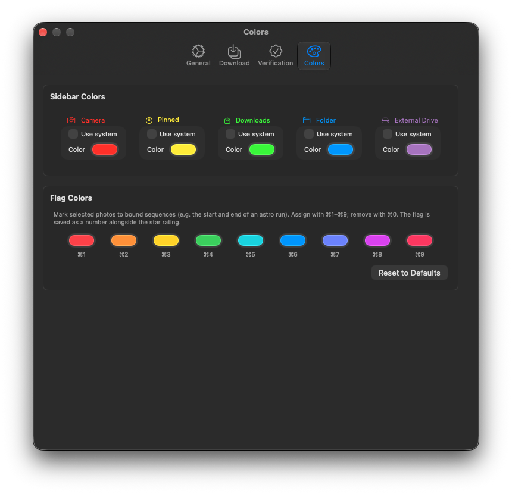
Sidebar Colors — the icon colour for each kind of sidebar row: Camera, Pinned, Downloads, Folder and External Drive. Tick Use system to follow the system accent instead of a fixed colour.
Flag Colors — the nine colour flags assigned with ⌘1–⌘9 and removed with ⌘0. Click a swatch to change it. A flag is stored as a number alongside the star rating, so recolouring the palette re-colours every image already flagged with that slot.
Reset to Defaults — restores the shipped palette.
File Renaming
Along with renaming files while they are being downloaded from a camera or a card, photographs can be renamed in place in the gallery: select them and choose Edit ▸ Rename…, or Rename in the context menu. This does not move the files to a different folder. The same tokens are available as for downloads.
In the rename window, build the name from tokens, choose whether date tokens use each photograph’s EXIF date, and set the number the sequence starts at. The preview shows every new name before anything changes; a name that is already taken is stepped aside rather than skipped, and any photograph that could not be renamed is named afterwards.
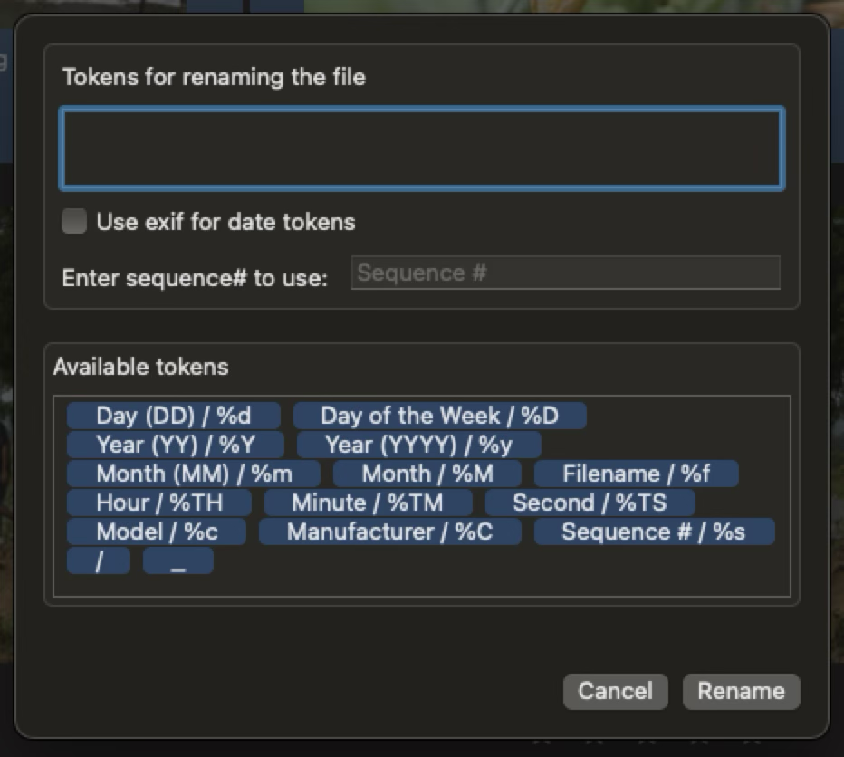
Note: After entering each word press Return to turn it into a token. Known tokens are dragged from Available tokens into the rename field.
Verifying copies
A plain file copy assumes it worked. FirstPass checks. Every file written is verified before the card is released, and anything that fails is re-copied automatically; whatever still fails is reported rather than quietly counted as a success.
Size — a fast sanity check that the bytes written match the bytes the camera reported.
Checksum — a content hash of the source compared against every copy written. Slower, and far stronger.
The two are mutually exclusive; choose one under Settings → Verification.
Cards you have seen before
New in version 1.8.
Turn on Settings → Verification → Remember what has been downloaded from a card, and FirstPass keeps a record of what it has copied off each card. Put the card back in and the photographs already copied are marked, and the download button offers only the new ones.
Download all still means all — nothing is skipped unless you ask for only the new photographs. The Download New button’s menu holds Download all.
The bar under the card says how many were copied earlier, for example 8 of 129 copied earlier.
An unattended download copies only what is new, and its report says how many it left on the card.
A card is remembered by the days it was downloaded on, and each day’s list is forgotten once it is older than Remember for. A card taken in one sitting is forgotten all at once; one worked across several days loses its older days first, and those photographs are offered again.
History starts from the next download after you turn it on, and Forget Download History… clears it.
It needs a card that identifies itself. Cards formatted exFAT carry a unique identifier; FAT32 cards do not, and FirstPass explains this the first time you turn it on.
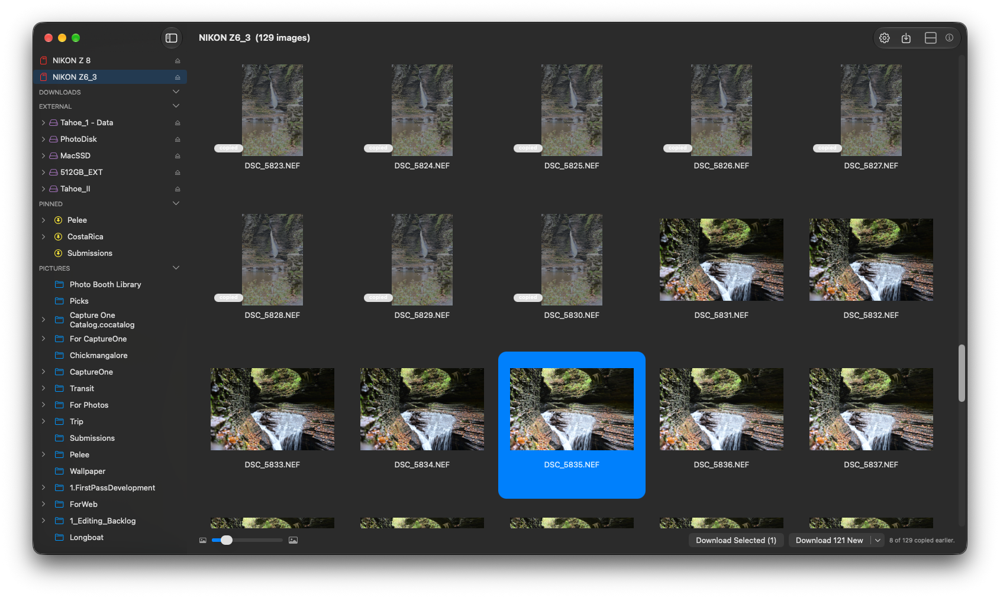
Transfer reports
For work that needs a paper trail, FirstPass writes a report of the job to the destination disk when the copy finishes. Enable the formats you need under Settings → Verification.
CSV manifest — one row per copy, with source, destination, size and verification result.
PDF report — the same information as a readable summary for a production or client.
ASC MHL — the industry-standard media hash list sidecar. It records a content hash, so it needs Checksum verification.
The CSV and PDF reports are named after the card and the time of the transfer, for example Report_NIKON_Z6_3__2026-10-28_220823.pdf, and are saved beside the photographs, in the folder holding the first copy. They name each copy’s file on the card and the folder it went to. ASC MHL manifests go in an ascmhl folder at the root of the destination, together with the chain file that records every manifest written there.
Fast and Automatic downloads
FirstPass can take files off a card two ways, chosen under Settings → Download.
Automatic — drives the camera over PTP. Works with any camera, whether connected directly or through a card reader, and never asks for permission. Slower on a large card.
Fast — copies straight off a mounted card’s filesystem, which is far quicker. The first time you insert each card, macOS asks you to grant access to it once; after that the card is remembered.
Note: Because a card’s one-time access grant cannot be given while nobody is watching, Fast mode and “start downloading automatically” cannot both be on. Your automatic-start preference is remembered and applies again in Automatic mode.
Note: Cards and cameras are browsed read-only: FirstPass never writes ratings or any other file back to a card, so nothing on the card is modified before it is copied.
Where your files land
Destination folders and filenames are built from tokens, and the date tokens resolve from each file’s own capture time — not from the day you happen to be importing. A card ingested a week after the shoot still files under the day it was shot. Where a file carries no capture date at all, the date the camera wrote the file is used instead.
Help and About
FirstPass ▸ About FirstPass — the version, how to reach us, and the release-notes signup.
Help ▸ Get Release Notes by Email… — sign up to hear about new releases. Nothing is sent until you type an address and press Sign Up; see the privacy policy.
Help ▸ Write a Review… — opens FirstPass’s page in the App Store.
Keyboard shortcuts
Anywhere
⌘N
New window
⌘O
Open a folder
⇧⌘E
Export the selection
⌘,
Settings
⌘E
Show or hide the image viewer
⌘I
Show or hide the info pane
⌘U
Compare the selected images
⌘L
Enter or leave focus mode
⌥⌘P
Play a slideshow
⌘1 – ⌘9
Set a colour flag
⌘0
Clear the colour flag
Gallery and viewer
← → ↑ ↓
Move the selection (← → only in the viewer’s film strip)
⇧ + arrow
Extend the selection
⌘A
Select all
⌘-click / ⇧-click
Add to the selection, or select a range
1 – 5
Rate one to five stars
0
Clear the rating
Space
Focus mode, or open or close the selected burst stack
⌫
Move the selection to the Trash
Double-click
Open the viewer; in the viewer, switch between Fit and 100%
Burst stacks
⌘↓ / ⌘↑
Select the next or previous stack
⇧K
Open or close the selected stack
⌥’
Open all stacks
⌥;
Close all stacks
P
Make the selected frame the stack’s pick
Compare
← ↑ / → ↓
Previous or next frame
= / −
Zoom in or out
0 – 5
Rate the chosen frame
⌘0 – ⌘9
Flag the chosen frame
⌫
Take the chosen frame out of the comparison
Esc
Close
Comparing a burst
← / →
Choose the Champion or the Challenger
↑ / ↓
Previous or next challenger
Return
Promote the challenger
⌘Return
Use the champion as the pick, and close
P
Make the chosen frame the pick
Esc
Close
Focus mode
← / →
Previous or next photograph
0 – 5
Rate
⌘0 – ⌘9
Flag
Esc or ⌘L
Leave focus mode
Slideshow
Space
Play or pause
← / →
Previous or next slide
Esc
End the slideshow
While dragging photographs
⌥
Copy
⌘
Move
⌃
Rename by your download rules as they land